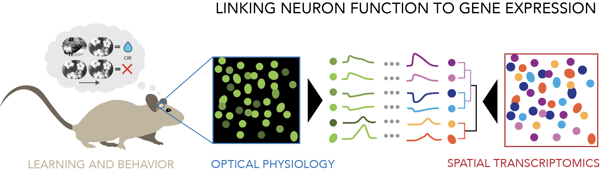
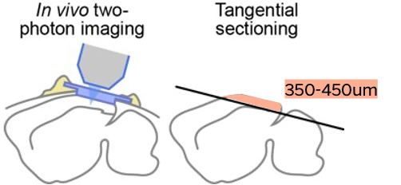
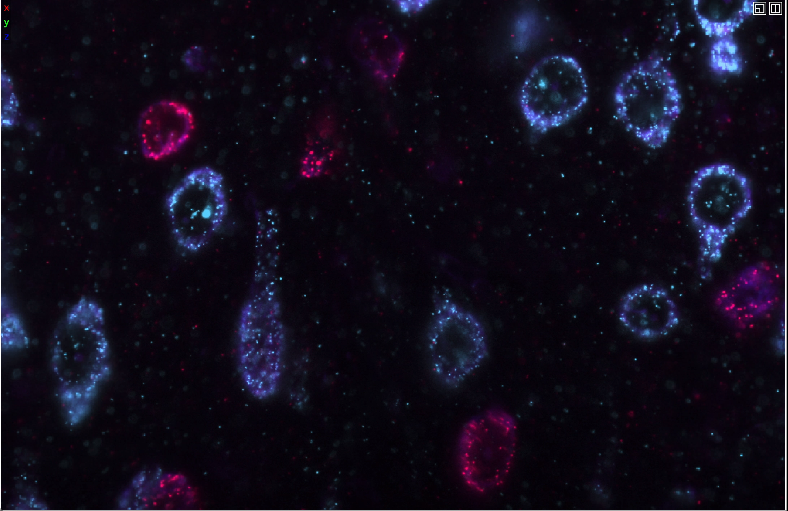
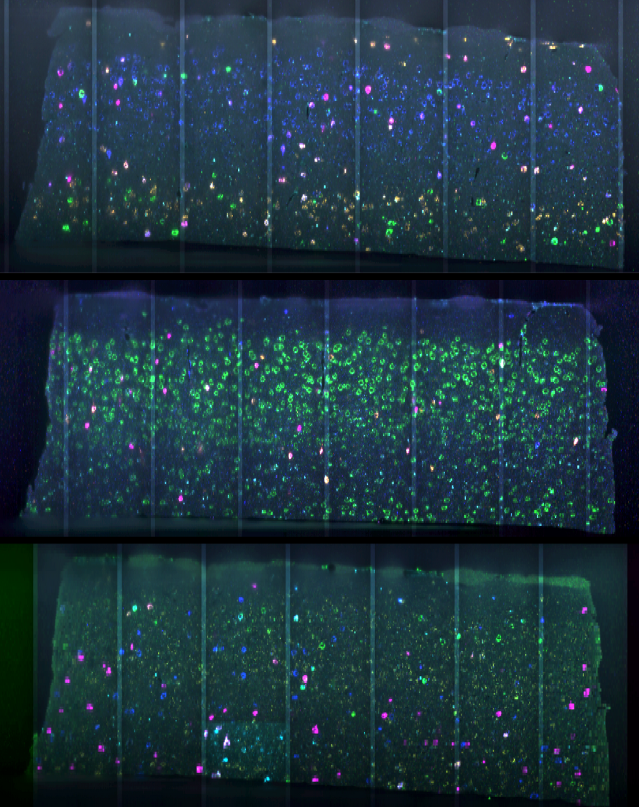
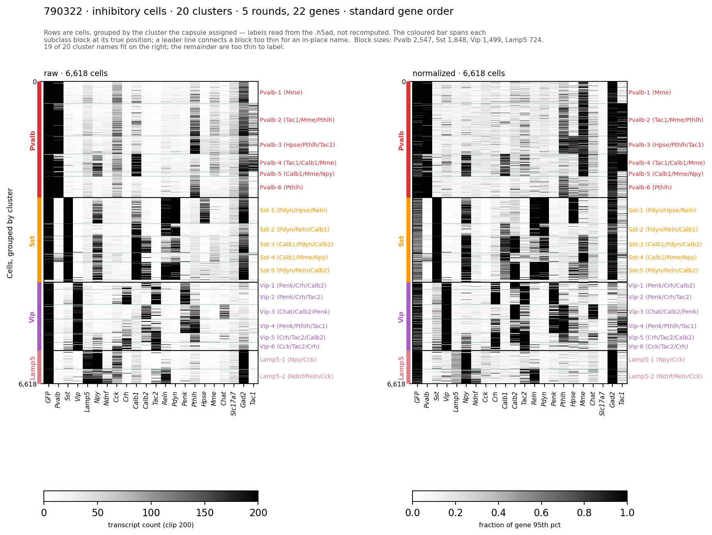
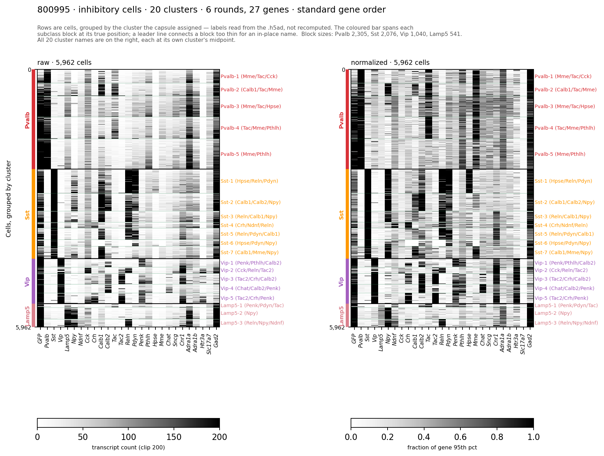

Visual Learning Transcriptomics#
The Visual Learning dataset measures the activity of inhibitory neurons in primary visual cortex while mice learn a go/no-go visual change detection task, and then measures the gene expression of those same neurons in the same tissue after the in vivo experiment is complete. This page describes the gene expression measurements: how the tissue was processed, which genes were measured, and what the resulting cell by gene table contains.

Fig. 77 Linking neuron function to gene expression#
Why measure gene expression in the imaged tissue#
Inhibitory neurons are not a single population. They comprise several molecularly distinct subclasses with different connectivity, different intrinsic properties, and different roles in cortical computation. The conventional way to study one of them is to choose it in advance, label it genetically with a Cre driver line , and record it in isolation — which gives one subclass at a time, in separate animals.
This experiment inverts that approach. All inhibitory neurons are labeled at once with a pan-inhibitory GCaMP8s reporter, recorded together in the same field of view across the entire training procedure, and assigned to a subclass afterward on the basis of the genes they express. Because identity comes from measured expression rather than from the driver line, several subclasses are recorded simultaneously in the same animal, which is what makes questions about interactions between subclasses accessible.
Recovering that identity requires measuring gene expression in the same neurons that were imaged. That is what the spatial transcriptomics data described here provides.
Tissue processing#
After the final in vivo session, the brain is removed and sectioned tangentially — parallel to the cortical surface rather than across it. Tangential sectioning is what makes the rest of the experiment possible: the imaging planes are stacked in depth within a single field of view, so a tangential section 350–400 µm thick contains all eight of them in one piece of tissue. A coronal section would cut across the imaged volume and distribute those planes across many separate sections.

Fig. 78 The imaged volume is recovered in a single tangential section#
Sections are then cleared and expanded, which makes the thick tissue optically accessible and physically separates transcripts that would otherwise be too close together to resolve as individual puncta.
One mouse is an exception. The section from mouse 782149 is roughly 200 µm rather than 350–400 µm, and covers only layers 1 through 3. Gene expression is available for the superficial part of that animal’s imaged volume and not for the deeper planes.
Hybridization chain reaction and multi-round imaging#
Gene expression is measured by hybridization chain reaction (HCR), a signal amplification method in which probes bound to a target mRNA nucleate the assembly of fluorescent hairpin polymers. Each individual transcript becomes a bright, diffraction-limited punctum, so expression is counted directly as a number of molecules rather than inferred from bulk intensity.

Fig. 79 Individual mRNA transcripts imaged as fluorescent puncta#
The tissue is imaged on a Zeiss Lightsheet 7. Five genes are probed per round, one in each of five spectral channels — 488, 514, 561, 594 and 638 nm. After a round is imaged, the probes are stripped and the tissue is reprobed for the next set of genes, so the same cells are imaged repeatedly across five or six rounds and the rounds are registered back to one another afterward.

Fig. 80 One tangential section imaged across three rounds#
The assignment of genes to channels is deliberate rather than arbitrary. Adjacent spectral channels bleed into one another, and that crosstalk is corrected computationally downstream. Genes that are expected to be co-expressed in the same cells are therefore assigned to channels that are not adjacent: if two co-expressed genes sat in neighboring channels, genuine co-expression and spectral crosstalk would produce the same signal and could not be told apart.
The gene panel#
The panel targets the four canonical inhibitory subclasses and the subtypes within them. It is not identical across mice — three animals were probed over five rounds and three over six:
Mice |
Rounds |
Genes |
|---|---|---|
782149, 788406, 790322 |
5 |
22 |
800792, 800995, 804363 |
6 |
27 |
All six mice share a 22-gene core: GFP , Gad2 , Slc17a7 , Pvalb , Sst
, Vip , Lamp5 , Npy , Ndnf , Cck , Crh , Calb1 , Calb2 , Tac1
, Tac2 , Reln , Pdyn , Penk , Pthlh , Hpse , Mme , and Chat .
The three six-round animals add Sncg , Cnr1 , Adra1a , Adra1b , and
Htr3a .
The panel has three kinds of gene in it. GFP reports the GCaMP
transgene, which marks the cells that carried the calcium indicator in vivo.
Gad2 and Slc17a7 are the canonical inhibitory and excitatory markers, and
identify which broad class a cell belongs to. Everything else is either a
subclass marker — Pvalb , Sst , Vip , Lamp5 — or a gene that
distinguishes subtypes within a subclass: Ndnf for neurogliaform cells
, Cck for basket cells , Calb2 for SST martinotti cells and
VIP bipolar cells , and so on.
Which round and channel a gene was imaged in is recorded alongside the
expression data, and the column names carry it directly: R5-561-Cck is Cck ,
imaged in round 5 in the 561 nm channel.
From images to a cell by gene table#
The processing chain begins with the raw lightsheet acquisitions and ends with a count of transcripts per gene per cell. Tiles from each round are stitched into a single volume, cells are segmented, individual puncta are detected and localized, spectral crosstalk between channels is corrected, the rounds are registered to one another so that a cell in round 1 can be identified in round 6, and the puncta assigned to each cell are counted.
The cell by gene table#
The result is a table with one row per segmented cell and one column per gene. Values are counts of detected transcripts. For each mouse the table covers the entire section — roughly 76,000 cells in the case of mouse 800995 — and includes excitatory and non-neuronal cells alongside the inhibitory ones. Only a small fraction of these cells were also imaged in vivo.
The table is distributed as an AnnData object, one per mouse. It carries the
expression data twice - once as raw trascript counts and once in a normalized
form that puts data on a similar scale to facilitate cross-animal comparisons.
The raw integer transcript counts are held in X . The normalized version is
held in layers['normalized'] and was produced in two stages: each cell is
first divided by its own mean gene count, which puts a brightly detected cell
and a dimly detected one on the same footing, and each gene is then divided by
its 95th percentile across cells and clipped to 1, which makes a rare gene and
an abundant one comparable. Detection depth varies over two orders of magnitude
across cells, so the normalized matrix is what the cell type labels below were
computed on. Both are provided so that a reader who wants counts does not have
to invert a normalization, and a reader who wants to reproduce the labels does
not have to guess one.

Fig. 81 Cells by genes for one mouse, five rounds and 22 genes#
The figure above shows the inhibitory cells of mouse 790322, raw counts on the left and the normalized matrix on the right, with rows grouped by cluster. The same view for mouse 800995 shows the six-round panel, with the five additional genes at the right of the gene axis:

Fig. 82 Cells by genes for a six-round mouse, 27 genes#
Cell class, subclass, and cluster#
Cells carry three levels of label, computed three different ways.
The names come from the Allen Institute cell type taxonomy , which nests
class , subclass , supertype and cluster . The
first two are used here in the same sense they carry there: inhibitory is a
class, and Pvalb , Sst , Vip and Lamp5 are the canonical inhibitory
subclasses. The third level - clusters - is directly derived from the cell type
taxonomy in this case. Clusters here are k-means groupings computed within each
mouse from the panel of 22 or 27 genes; they are not the exact cluster labels
from the reference taxonomy and do not correspond to a supertype or cluster in
it. Read them as within-mouse structure finer than subclass. You can also
perform your own clustering or map to the taxonomy if you wish.
The three levels are described below from broadest to finest.
Class — excitatory , inhibitory , or unassigned — comes from a
threshold on raw marker counts. A cell needs at least 100 transcripts of a class
marker to be called. Any of Gad2 , Pvalb , Vip , Sst , or Npy clearing
that bar makes a cell inhibitory; Gad2 on its own under-calls, because it is
only moderately expressed in some interneuron types. Slc17a7 clearing
the bar with no inhibitory marker makes a cell excitatory. Cells that clear the
threshold for both Gad2 and Slc17a7 are left unassigned rather than forced
into one class, as are cells that meet none of the categories described above.
Lamp5 is a subclass marker but deliberately not one of the genes that can
admit a cell to the inhibitory class because it is also expressed in excitatory
cells. Instead Npy is used, which is expressed in most LAMP5 cells but not
excitatory cells.
Subclass — Pvalb , Sst , Vip , or Lamp5 (see the glossary
definitions for PV neuron , SST neuron and VIP neuron )
— comes from the expression of the four canonical subclass marker genes
themselves. The assigned subclass is made based on which of the four markers has
the highest mean normalized expression for each cell. Subclass labels are only
given to cells that are assigned to the inhibitory class.
Cluster labels in this dataset come from k-means run on the normalized
expression matrix, separately within each class, with k=20 clusters among the
inhibitory cells and k=12 among the excitatory cells. Each cluster is named for
the genes most enriched in it relative to the other clusters, giving names like
Pvalb-2 (Mme/Calb1/Cck) . Clustering is computed fresh for each mouse from
that mouse’s own data, so cluster identity is not comparable across animals:
Sst-3 in one mouse is not Sst-3 in another. Clustering on the across mouse
normalized expression data could be used to identify shared clusters across
mice.
Subclass is the level of resolution intended for most analyses. The cluster labels are present in the data for anyone who wants finer structure, with the caveat above that they are per-mouse. Neural activity can also be related to graded expression across all 22 or 27 genes directly, rather than to discrete groupings — the full expression profile of every cell is available, and nothing requires that cell identity enter an analysis as a categorical variable.
The unassigned population#
The class threshold is deliberately conservative, and a substantial number of
cells end up unassigned as a result. Two situations produce that label. Cells
expressing both Gad2 and Slc17a7 above threshold are usually merged
segmentations or residual contamination, and calling them either way would
propagate that error. Cells below threshold on every class marker have no
positive evidence in either direction — but because the threshold is a fixed
count applied to raw data, and detection depth varies over two orders of
magnitude between cells, a dimly detected cell can fall below it regardless of
what it actually is.
A less conservative classification could be used to include more neurons, and we will provide additional options for filtering in a future data release.
The neurons that were also imaged#
Most of the cells recorded in the HCR transcriptomics data were never imaged in vivo; only a small portion of the tissue contains the 2-photon imaged volume (a 400x400um cube). The gene expression measurement covers the whole tangential section; the imaging covers eight planes within it, and a neuron must survive several registration steps to be matched between the two. The subset carrying both a gene expression profile and a record of activity during behavior is correspondingly smaller.
The procedure that links the two measurements, the identifiers involved, and the number of neurons available at each stage are described in Linking Ophys and Transcriptomics .